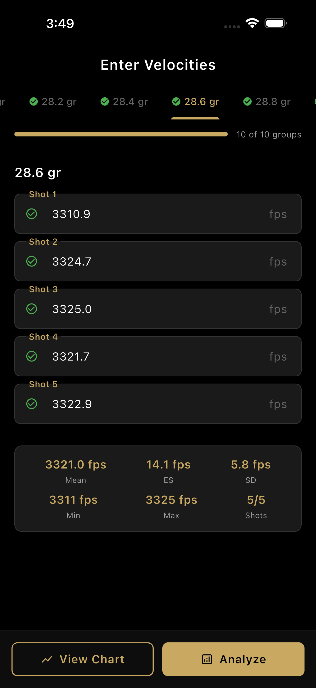
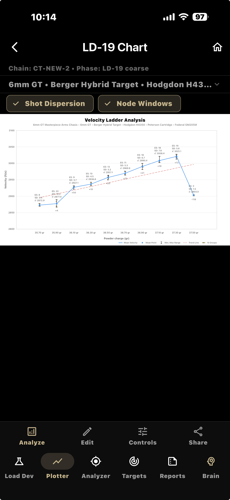
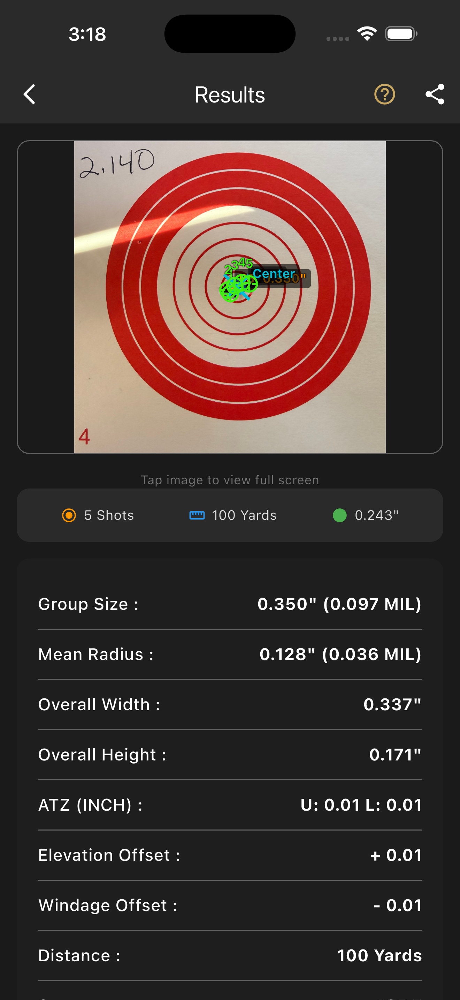
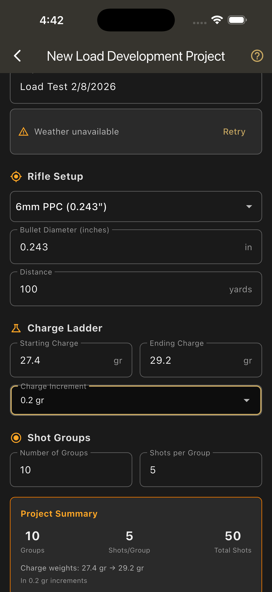

A Complete Load Development System — Not Just an App
Plan, test, analyze, and validate loads with one connected system.
Built around real load development workflows — not generic data tracking.
Four Modules. One Integrated Platform.
Every module shares data automatically. Test results flow into scoring. Scores route back to your load project. No manual re-entry.
PrecisionLoad
33-step guided load development with AI Brain, 34+ caliber recommendations, and expert knowledge at every step.
Ballistic Plotter
Deterministic scoring engine with 5-component formula, charge ranking, and two-phase seating depth optimization.
Ballistic Analysis
Photograph targets, calibrate scale, mark impacts. 14+ statistical measurements per group with branded share images.
Ballistic Targets
IBS-style competition targets, grid layouts, sighter references, and PDF export — designed for precision testing and print.
PrecisionLoad Core
33 Steps. 7 Phases. Every Decision Documented.
A structured workflow that follows the actual sequence experienced reloaders use — from initial setup through final load certification.
★ PrecisionLoad Brain
Context-aware AI that reads your actual project data — brass dimensions, bushing sizes, charge weights, velocity data, group measurements. It doesn't give generic advice. It analyzes your specific situation, references your components, and provides actionable guidance tuned to your current step.
Includes integrated web search for manufacturer specifications, community load data, and component availability.
🏅 Expert Mode
Experienced reloaders don't need guidance on brass prep. Expert Mode lets you skip the 7-step brass preparation phase entirely and go straight to planning. You still get the full workflow structure, data pipeline, and scoring — without being forced through steps you've done a thousand times.
40+ embedded expert knowledge entries cover safety rules, best practices, troubleshooting, and caliber-specific formulas throughout the workflow.
Ballistic Plotter
Deterministic Scoring — No Black Box
Automatically ranks charge weights based on vertical dispersion, velocity behavior, and group stability — not just group size.
Every score is calculated from a transparent, weighted formula. Every ranking comes with reason codes. Every recommendation tells you exactly why.
The Scoring Formula — Transparent & Locked
Each component uses inverse-proportion scoring: 100 / (1 + value × k). Smaller measurements = higher scores.
| Component | Weight | What It Measures | Why It Matters |
|---|---|---|---|
| Vertical Dispersion | 40% | verticalInches | The #1 predictor of a true charge node — vertical stringing means velocity variation |
| Group Size | 25% | groupSizeInches (extreme spread CC) | Overall group tightness — what most shooters measure at the range |
| Mean Radius | 15% | meanRadiusInches | Average tightness from centroid — less sensitive to single outliers than ES |
| Geometry Quality | 10% | min(H,V) / max(H,V) | Group roundness — 1.0 = perfect circle, low = stringing in one axis |
| Chrono Support | 10% | SD (fps) & ES (fps) | Velocity consistency — neutral if no chrono data (never penalizes missing data) |
3-Factor Confidence Score — How Certain Is the Decision?
Three weighted factors:
60% — Absolute quality of top candidate's composite score
30% — Separation gap between #1 and #2 (clear winner = high confidence)
10% — Data completeness (missing groups, low marking confidence penalized)
Charge Node Ranking
Charges ranked by composite score with reason codes: BEST_VERTICAL, TIGHT_GROUP, GOOD_CHRONO, ROUND_GROUP. You see exactly why each charge ranked where it did.
Two-Phase Seating Optimization
Coarse sweep at 0.010" increments, then fine sweep at half-increment. Systematically narrows to the optimal seating depth without wasted rounds.
Chrono Spike Detection
Flags velocity jumps exceeding 50 fps between adjacent charges. Identifies pressure signs before they become safety issues.
Confidence Scoring
Three-factor confidence: 60% from top score, 30% from separation gap between #1 and #2, 10% from data completeness. 75% threshold gates routing decisions.
Automatic Workflow Routing
After scoring, Plotter tells PrecisionLoad what to do next — advance to optimization, run extended testing, or refine the current ladder. Every routing decision is explained.
Three Ladder Types
Powder charge ladder, neck tension ladder, and seating depth sweep. Each with configurable start/end values, increments, and group assignments.


Ballistic Analysis
Photograph. Calibrate. Measure.
14+ statistical measurements per group — from a photograph of your target.
Two-Point Scale Calibration
Tap two points at a known distance. The system calculates pixels-per-inch and scales all measurements to real-world dimensions.
Precision Shot Marking
Tap to place impacts at bullet-diameter scale. Drag with a magnifier loupe for sub-pixel accuracy. Each shot is individually adjustable.
Complete Statistical Engine
Group Size, Angular Size (MOA/MIL), Mean Radius, CEP, Radial SD, Horizontal/Vertical SD, H-Spread, V-Spread, Centroid, POA Offset, and Quality Score — all calculated per group.
Direct Pipeline to Plotter
Group measurements flow directly into Ballistic Plotter for scoring. Feed entire ladder tests — 10 groups, one project, automatic scoring of every charge.
Branded Share Images
Generate 1290×2796 resolution annotated images with your group statistics, target photo, and Choice Tactical branding. Ready to share.


Ballistic Targets
Competition-Grade Target Design
IBS-style targets, grid layouts, sighter references, and calibration marks — designed for precision testing and ready for print.
IBS-Style Targets
Regulation-format targets matching IBS (International Benchrest Shooters) specifications. Proper ring sizing, scoring lines, and record fire zones designed for competition and serious load testing.
Grid Layouts
Multi-target grid layouts for efficient ladder testing. Arrange 5, 10, or custom target counts on a single sheet — one target per charge weight for systematic data collection.
Sighter Targets
Dedicated sighter target formats with separate sighting squares and record fire zones. Ensure your zero is confirmed before recording test groups.
Calibration References
Built-in scale references printed on every target for Ballistic Analysis calibration. Two-point calibration marks at known distances eliminate measurement guesswork.
PDF Export
Generate print-ready PDF files at proper scale. Print at home or at a commercial printer — targets maintain exact dimensions for accurate scoring and measurement.
Analysis Integration
Targets designed to work seamlessly with Ballistic Analysis. Calibration marks on printed targets match the two-point calibration system — photograph, calibrate, measure.
Target Formats
Decision Engine
Every Recommendation Has a Reason
PrecisionLoad doesn't just tell you what to do. It shows you why — with the data, the logic, and the confidence level behind every decision.
Decision Trace
Every recommendation includes a complete decision trace — what data was analyzed, which measurements mattered most, and the specific logic path that led to the recommendation. No hidden algorithms. No unexplainable outputs.
Example trace:
"Charge 41.2gr selected: Vertical dispersion 0.31 MOA (best in ladder), group size 0.58 MOA (2nd best), confidence 82%. Separation from #2 candidate: 11 points. Recommend advancing to seating depth optimization."
Node Detection
Identifies optimal charge nodes using vertical dispersion as the primary signal. Detects BEST_VERTICAL, TIGHT_GROUP, GOOD_CHRONO, and ROUND_GROUP nodes — each flagged with specific reason codes tied to actual measurements.
Confidence Scoring
Three-factor composite: absolute score strength (60%), separation gap between top candidates (30%), and data completeness (10%). The 75% threshold gates all routing decisions — if confidence is low, the system tells you to gather more data, not guess.
Flatness Detection
Identifies velocity plateaus across adjacent charge weights — regions where velocity changes are minimal despite powder increases. These flat zones often indicate pressure stability and optimal charge windows.
Data Strength Indicators
Every analysis shows data strength — how many groups were measured, whether chrono data was included, sample sizes per charge weight, and whether any measurements are missing or incomplete. You always know how much to trust the result.
Historical Comparison
Compare results across test sessions. See how your current ladder performs against previous attempts with different components, primers, or conditions. Track improvement over time with the same level of transparency.
The Difference
This Is Not AI Guessing
Most reloading apps either give you no guidance or hide their logic behind marketing terms like "advanced algorithms." PrecisionLoad uses a deterministic scoring formula with published weights, documented thresholds, and visible decision paths.
Every number comes from your data. Every recommendation cites specific measurements. If you disagree with a recommendation, you can see exactly why it was made and decide for yourself.
Every recommendation is data-driven, every decision path is visible, and every conclusion can be verified against your own measurements.
Reports & Documentation
Complete Load Development Records
Every measurement, every decision, every test result — documented and exportable.
Load Certification Reports
Complete certification-style documentation of your final load — every parameter locked, every test result recorded, every decision traced. The definitive record of how and why your load was developed.
Decision Trace History
Full history of every routing decision, scoring result, and recommendation. See what the system recommended at each step, what data drove those recommendations, and what you chose to do.
Historical Comparison
Compare results across test sessions and load development projects. Track how different components, primers, or conditions affected performance over time with full data parity.
Cross-Module Data Integration
Reports pull data from every module — PrecisionLoad workflow progress, Plotter scoring results, Analysis group measurements, and Targets calibration data — into unified documentation.
Branded Share Images
Publication-ready images showing group statistics, target annotations, and scoring results. Full resolution, branded, and ready to share with your shooting community.
Load Cards
Generate reference cards with your final certified load — cartridge, powder charge, bullet, seating depth, primer, brass, and expected performance data. Take it to the range.
Gallery
PrecisionLoad Suite in Action
Why PrecisionLoad
What Makes This Different
Not a Data Logger
Most reloading apps let you record data. PrecisionLoad tells you what the data means, what to do next, and why. The difference is a deterministic scoring engine, confidence-gated routing, and full decision transparency — not just a prettier spreadsheet.
Not a Black Box
Every formula is published. Every weight is documented. Every recommendation cites specific measurements from your data. If the system says "41.2 grains is your best charge," it shows you the vertical dispersion, group size, chrono data, and confidence score that led to that conclusion.
Not Four Separate Apps
PrecisionLoad, Plotter, Analysis, and Targets share data through Apple App Groups. Test results from Analysis feed into Plotter scoring. Plotter routing decisions flow back to PrecisionLoad. Zero manual data transfer between modules.
Not Generic
34+ caliber-specific load profiles. IBS-format targets. Discipline-specific recommendations for Benchrest, F-Class, PRS, ELR, and Hunting. This isn't a generic measurement tool adapted for reloading — it was built for it from the first line of code.